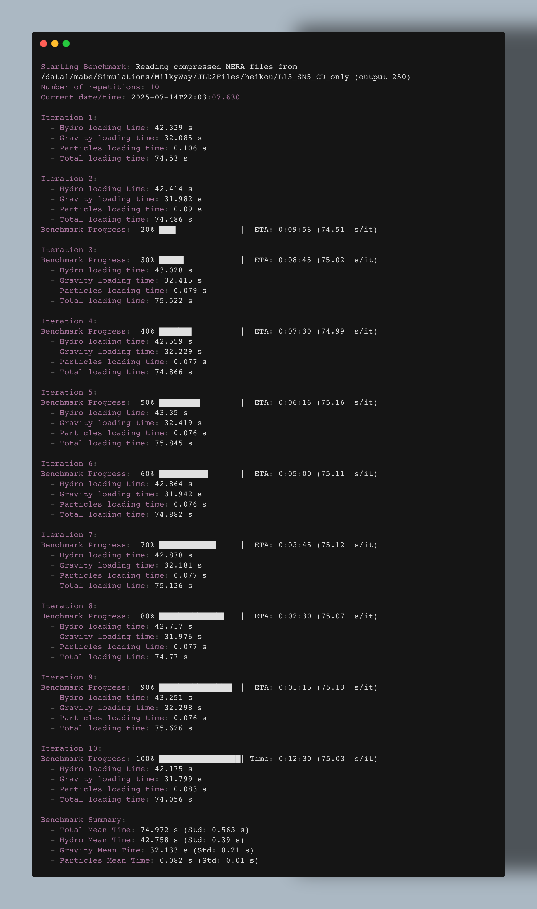
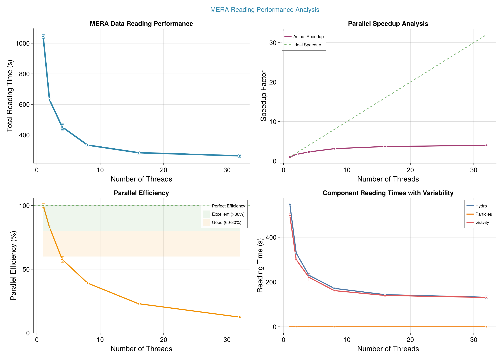

Benchmark: Single-Threaded Reading Performance of Compressed MERA Files
This guide shows how to benchmark the reading speed of compressed MERA files using Mera.jl in single-threaded mode. On large-scale simulation data, reading a single MERA file is often several times faster than reading the original RAMSES files—even when the latter uses multi-threading. MERA files also provide significant disk space savings, freeing up resources for more simulations.
Overview
Mera.jl enables efficient reading of RAMSES simulation files, which are often compressed to reduce storage requirements. This test benchmarks the reading of hydro, particle, and gravity components from a specified output, measuring timings and reporting average speeds.
Prerequisites
Before running the test, ensure you have:
- Julia ≥ 1.10 (recommended)
- Mera.jl installed in your Julia environment
- MERA files: Access to compressed simulation outputs (e.g.,
output_00250.jld2) - Hardware: Sufficient memory and storage (decompression may require extra RAM)
Installation
Activate your Julia environment and install Mera.jl:
using Pkg
Pkg.activate(".")
Pkg.add("Mera")Example Benchmark Script: runt_test.jl
The following Julia script performs the single-threaded reading test. It loads simulation metadata, reads each component once, measures the time taken, and calculates reading speed in MB/s based on approximate file sizes.
down load file at... github run in command line run_test.jl script in single threaded mode with your desired julia version
Saving Output for Later Analysis
To save the screen output of your benchmark run for later review, pipe the output to a file in your benchmark folder. For example, on macOS or Linux:
If you use juliaup to manage Julia versions, you can specify the Julia version for the run. For example, to use Julia 1.10:
julia +1.11 -t 1 run_test.jl | tee benchmarks/benchmark_$(date +%Y-%m-%d).logThis will run the script with Julia 1.10 (or your chosen version), using a single thread, and store the output in a file named with today's date (e.g., benchmark_2025-07-26.log) inside the benchmarks folder. Adjust the folder name and Julia version as needed.
Key Script Components
- Metadata Loading: Uses
infodatato retrieve simulation details without verbose output. - Component Reading: Calls
loaddatafor:hydro,:particles, and:gravityin sequence, timing each operation. - Speed Calculation: Computes MB/s based on estimated file sizes.
- Output: Prints timings and speeds for each component, plus a total summary.
Running the Test & Example Output
Run the script as described above. The output will look similar to:

Performance Overview
The following chart shows detailed performance comparisons across different simulation components:

Interpreting the Results
In typical tests, parallel reading of the same data from RAMSES files (using multi-threading) may require much longer (e.g., >> 260 sec), while reading a compressed MERA file with a single thread can take as little as ~75 sec. This demonstrates the efficiency and speedup provided by the Mera format. Compare your results to multithreaded RAMSES reading to quantify your own gains.
Comparative Analysis: Mera vs. RAMSES File Reading
Speedup Comparison Example
Below is a template for comparing the reading speed of Mera files (single-threaded) to RAMSES files (even when using multi-threading):
| Simulation Name | File Type | Threads Used | Read Time (s) | Speedup vs. RAMSES |
|---|---|---|---|---|
| ExampleSim | RAMSES | 16 | 260 | 1.0x (baseline) |
| ExampleSim | Mera (JLD2) | 1 | 75 | 3.5x |
How to use:
- Replace
ExampleSimwith your simulation name. - Fill in the actual read times for both RAMSES and Mera files.
- Calculate speedup as
(RAMSES time) / (Mera time).
Interpretation: In this example, reading the compressed Mera file with a single thread is 3.5 times faster than reading the original RAMSES files with 16 threads.
Storage Reduction Example
Below is a template for showing the storage savings achieved by using compressed Mera files:
| Simulation Name | RAMSES File Size (GB) | Mera File Size (GB) | Reduction (%) |
|---|---|---|---|
| ExampleSim | 120 | 32 | 73% |
How to use:
- Replace
ExampleSimwith your simulation name. - Fill in the total size of the RAMSES and Mera files for the same output.
- Calculate reduction as
100 * (1 - (Mera size / RAMSES size)).
Interpretation: In this example, using compressed Mera files reduces storage requirements by 73% compared to the original RAMSES files.